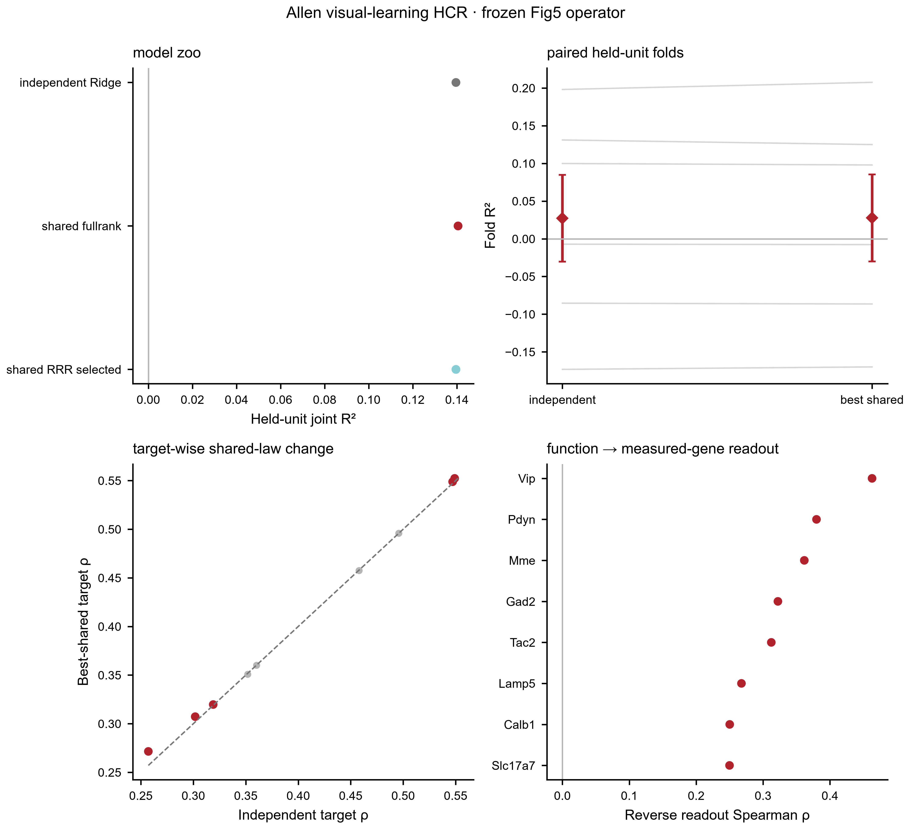
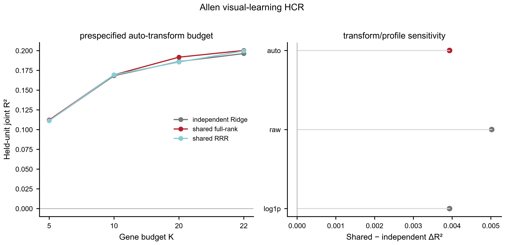

This page exposes what can actually be run and defended: stage coverage, key metrics, held-unit/null contract, explicit stop rules and downloadable authority rows.
7/7 stages standardized or explicitly gated.
4 key metrics extracted into this page.
2 authority subsets downloadable.
Evidence role: SUPPORT
Current authority: genes vs coarse type delta Spearman +0.0885, delta R2 +0.0272, wins=1.0; type_l1 relation index 0.2553, q=0.000999
Boundary/stop rule: nan
Evidence role: SUPPORT
Current authority: VISp exact: 19/21 overlap; geometry rho=0.241; hidden-gene recovery rho=0.206; stability=0.816; multiple held-mouse downstream gains
Boundary/stop rule: nan
Evidence role: SUPPORT
Current authority: K5 vs matched random: delta Spearman +0.097, delta AUROC +0.062, delta AUPRC +0.046; 6/6 wins for rank/AUC/AP; q=0.0469
Boundary/stop rule: nan
Evidence role: SATURATION_BOUNDARY
Current authority: Full-chain biology-aware completion: best delta R2=+0.0079 (feat__change_reliability); 0 robust multimetric conditional-completion targets.
Boundary/stop rule: Do not headline a positive delta R2 when rank/held-unit evidence does not agree.
Evidence role: ABSOLUTE_OPERATOR_SUPPORT
Current authority: PerturbAtlas-compatible 15-gene/10-function deployment=shared_fullrank: held-mouse R2=0.1556, Spearman=0.3696, AUROC=0.7415, fold-R2-positive=0.50; fig7_ready=true.
Boundary/stop rule: Fig7 qualification is based on held-unit prediction; it is not causal validation.
Evidence role: FOUNDATION_AUGMENTATION_PLUS_NEGATIVE_GENERALIZATION
Current authority: Within-dataset raw+Large vs raw mean delta R2=+0.0046, 8/10 targets positive. Prespecified HCR visual-evoked-strength -> Zhao transfer: source OOF rho=0.305, target rho=-0.192, p=0.921; status=EXECUTED_NO_TARGET_TRANSFER; claim_supported=false.
Boundary/stop rule: Single-dataset foundation-forward augmentation is not itself a cross-dataset conservation claim. Representation/hyperparameters were selected source-only, but target evaluation is non-positive; do not claim transfer or conservation.
Evidence role: PROSPECTIVE_DESIGN_SUPPORT
Current authority: One-command Fig7: 44,133 perturbation-context conditions; 7,781 eligible; 2,046 perturbations; 23 contexts, using the held-mouse-qualified Fig5 operator.
Boundary/stop rule: Rankings are prospective direction/selectivity hypotheses, not calibrated effect sizes or causal discoveries.

Frozen model contract: independent Ridge versus shared full-rank and response-space RRR under grouped biological-unit outer CV. Panel B keeps folds paired without duplicating individual points; panel C exposes target-wise heterogeneity; panel D tests reverse function→measured-gene readability.
model summary ·
fold metrics ·
target metrics ·
reverse-gene summary ·
editable SVG

Inference: grouped held-biological-unit outer CV. The auto_K22 full measured-gene contract is primary. Budget, raw/log1p and biological-profile sweeps are sensitivity analyses and are not promoted over the frozen primary contract by choosing the best-looking value.
Exploratory sensitivity maximum: raw_K22 / shared_RRR_selected, R²=0.2137, ΔR²=0.0050.
all sweep rows ·
primary fold metrics ·
editable SVG ·
PDF
Final acceptance for a stage is stricter than showing a result: input contract → QC → held-unit split → comparator/null → full metrics → biological-unit consistency → figure/source-data → stop decision.